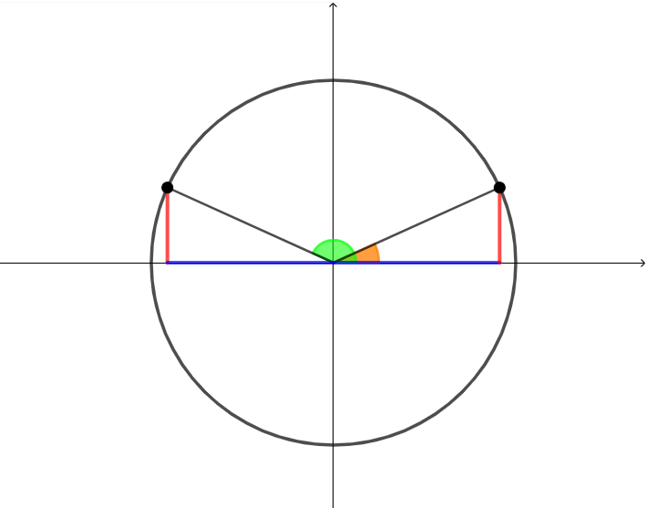

Trascinando il punto nero sulla circonfereza potete visualizzare seno, coseno e tangente dell'angolo che vi interessa e confrontarli con seno, coseno e tangente dell'angolo di cui è multiplo.
Potete usare questo strumento per risolvere gli esercizi che seguono.
Svolgere le seguenti espressioni
Soluzione: \(\,\,\,-\dfrac{3}{2}\)
Soluzione: \(\,\,\,3\)
Soluzione: \(\,\,\,-\dfrac{3\,\sqrt{3}}{4}\)
Riscrivere l'espressione \[ \left[-sin^2\left(\alpha\right) + tan\left(\alpha\right) - cos^2\left(\alpha\right)\right] \cdot \dfrac{cos\left(\alpha\right)}{sin\left(\alpha\right)} \] in funzione di \(tan\left(\alpha\right)\).
Soluzione: \(\dfrac{tan\left(\alpha\right) - 1}{tan\left(\alpha\right)}\)
Riscrivere l'espressione \[ \dfrac{sin^2\left(\beta\right) -1}{cos\left(\beta\right) + tan\left(\beta\right) \cdot sin\left(\beta\right)} \] in funzione di \(cos\left(\beta\right)\).
Soluzione: \(-cos^3\left(\beta\right)\)
Sapendo che l'angolo \(\alpha\) è tale che \[ \pi \lt \alpha \lt \dfrac{3}{2}\pi \] e che \[ sin\left(\alpha\right) = -\dfrac{3}{4} \] calcolare il valore di \(\dfrac{1}{tan\left(\alpha\right)}\)
Soluzione: \(\,\,\,\dfrac{\sqrt{7}}{3}\)
Consideriamo un generico angolo \(\alpha\) e supponiamo di conoscerne sia il seno che il coseno.
Esistono alcuni angoli particolari, detti angoli associati ad \(\alpha\), i cui seno e coseno sono riconducibili a quelli di \(\alpha\).
\(\color{green}{\boxed{\boldsymbol{\pi - \alpha}}}\)
L'angolo \(\color{green}{\pi - \alpha}\) è quello che otteniamo aprendo un angolo piatto \(\left(\pi\right)\) e "tornando indietro" di \(\color{darkorange}{\alpha}\)

Come si evince dalla figura, la misura dei due lati rossi è
uguale. Inoltre il segno è lo stesso (tutti e due "puntano verso l'alto"). Di conseguenza
\[
sin\left(\pi - \alpha\right) = sin\left(\alpha\right)
\]
Allo stesso modo i due lati blu hanno la stessa misura. In questo caso
però uno "punta verso destra", mentre l'altro "punta verso sinistra": hanno segni opposti!
Di conseguenza possiamo dire che
\[
cos\left(\pi - \alpha\right) = -cos\left(\alpha\right)
\]
Infine vogliamo esprimere la \(tan\left(\pi - \alpha\right)\) rispetto a \(tan\left(\alpha\right)\).
Per farlo usiamo la seconda relazione fondamentale della goniometria e le due uguaglianze ottenute sopra:
\[
\begin{align*}
tan\left(\pi - \alpha\right) &= \dfrac{\color{red}{sin\left(\pi - \alpha\right)}}{\color{blue}{cos\left(\pi - \alpha\right)}} \color{black}{}=
\\\\
& = \dfrac{\color{red}{sin\left(\alpha\right)}}{\color{blue}{-cos\left(\alpha\right)}} =
\\\\
& = -\dfrac{sin\left(\alpha\right)}{cos\left(\alpha\right)} =
\\\\
& = -tan\left(\alpha\right)
\end{align*}
\]
Concludiamo che le funzioni goniometriche di \(\pi - \alpha\) si possono esprimere rispetto a quelle di \(\alpha\) come seguenti
Ricalcando i ragionamenti dell'esempio, esprimere seno, coseno e tangente dei seguenti angoli rispetto alle funzioni goniometriche di \(\alpha\):